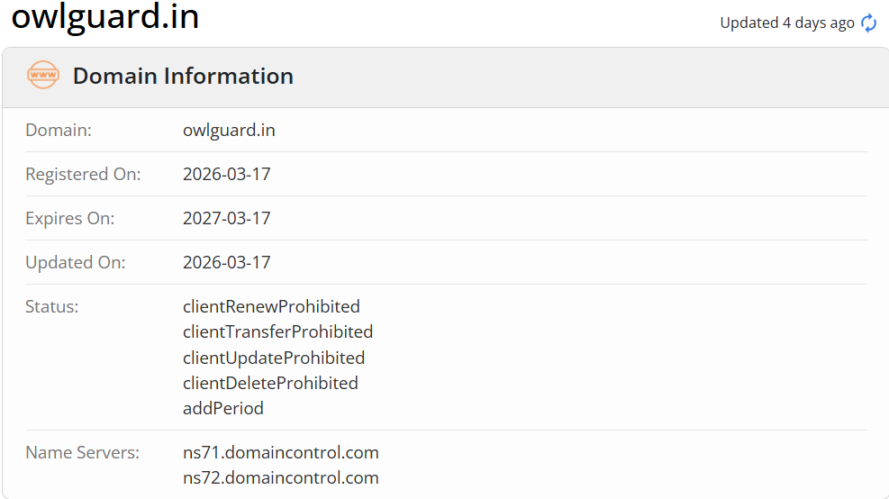

HOME
Reconnaissance Phase
Reconnaissance Phase
Lab 02: Information Gathering
Is lab mein hum seekhenge ki kaise kisi target domain ki hidden technical aur ownership details nikaali jati hain using Whois aur DNS Enumeration.
Part A: Whois Lookup
Whois ek query protocol hai jo domain name ke owners, registration dates aur technical contacts ki jaankari deta hai.
Step 1: Online Search
Browser mein Whois.com kholo aur target domain (e.g., owlguard.in) enter karo.

Step 2: Key Points to Analyze
- Registrar: Wo company jahan se domain liya gaya (e.g. GoDaddy).
- Creation Date: Kab website pehli baar register hui.
- Name Servers: Website ka traffic kahan se route ho raha hai.
Hacker Tip: Agar 'Privacy Protection' enabled hai, toh owner ka asli naam aur phone number hidden rahega.
Part B: DNS Enumeration
DNS lookup se hum domain name ko IP address mein translate karte hain.
Step 1: Understanding DNS Records
| Record | Description |
|---|---|
| A Record | IPv4 Address (Server Location) |
| MX Record | Mail Exchange (Email Servers) |
| TXT Record | Verification records aur security policies. |
Step 2: Command Line Method
Terminal mein ye command type karein:
nslookup owlguard.in